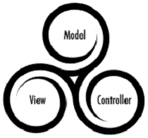

About me
I am currently a Year 2 student from Singapore Management University, pursuing a Bachelor of Science (Information Systems) and I am expected to graduate in May 2019. I am a highly motivated individual. I like to explore new fields of knowledge and challenge myself to achieve greater heights. I have joined SMU Devera, a club in SMU that provides opportunities to take up real-life web development projects. I have extensive event organising experience coupled with strong people and communication skills. I was part of the organising committee of Apex IT-Business Case Challenge 2016, an international competition which hosted participants from over 8 countries. I am seeking an internship opportunity starting May 2017 in the IT sector.
RESUME
Education
BSc: Information Systems @ Singapore Management University AUG 2015 - PRESENT
• Cumulative GPA 3.62/4.0
Work Experience
Food Server @ Itacho Sushi AUG 2015 - AUG 2016
• Communicate with customers to understand their needs better and relay the message to the respective party • Take notice of details in the restaurant to ensure customers’ drinks are refilled and empty plates are removed from the tables constantly • Ensure good time management skills so that food is served on time and at the proper temperature
Roles & Experiences
Sponsorship Director @ SMU-SIS Pageant Competition MAR 2016 - AUG 2016
• Crafted and sent customized emails or Facebook messages to various companies to request for sponsorships • Secured 2 sponsorships(worth $1,300 on average)
Events Executive @ APEX Business IT Global Case-Challenge SEP 2015 - MAY 2016
• Conducted Thematic Workshop for 68 international participants • Being attentive of surrounding situation to avoid potential problems from occurring • Kept track of event flow and timing to ensure that the workshop ended on time
Consultant @ Singapore Management University Social Enterprise JAN 2016 - MAY 2016
• Led a team of 3 to introduce a brand new social business initiative, MasterMINDS for Movement for the Intellectually Disabled of Singapore (MINDS), assisting social enterprise expansion plans • Presented research findings and proposed MINDS bakery on potential improvements to enhance marketability and profitability • Achieved recognition by Business Director of MINDS Social Enterprise
Hackathons
code::XtremeApps:: | Front-end Developer JUL 2016
• Built a personal wealth management system with two-factor authentication
Community Service
Nitebike 2016 | Facilitator OCT 2016
• Led a group of SMU and SUTD students for the annual night cycling event around Singapore • Helped the facilitation of games, meal and activities throughout the event
Project Tacloban - Overseas Community Service @ Philippines | Operations Director SEP 2015 - DEC 2015
• Organised simplified Design Thinking workshops for 100 students in Marasbaras High School • Redesigned the workshop syllabus after understanding the constraints upon reaching Marasbaras High School
Projects I've done
BIOS system | link here AUG 2016 - NOV 2016
• Created a system similar to SMU's course bidding system with a team of 5 using the MVC framework • Managed the project from Requirements, Design, Code, Integration to System Testing using the Iterative process

Other Skills
Frontend:
-
HTML
-
CSS
-
JS
-

Twitter Bootstrap
Backend:
-
JSP
-
Java
-
MySQL
-
VBA
-
Tomcat
-

MVC Framework
-

Git